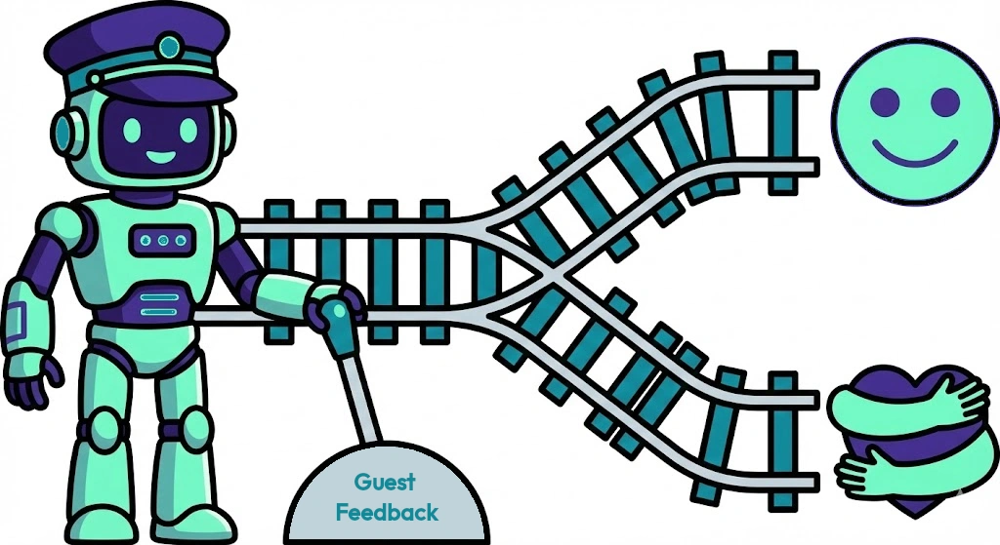

SYSTEM OVERVIEW: THE OUTCOME ENGINEER
Concept & Logic Brief
1. The Plain English Value: Why do I need this?
The most common question we get is, "My reservation platform already collects feedback. Why is this better?"
The answer is simple: Traffic.
When a guest searches for a place to eat, they use Google, not a reservation app. A 5-star review inside OpenTable or Resy is invisible to that search traffic—it helps the platform, not you.
The Risk: A single 1-star review acts as a massive drag on your rating. Mathematically, it often takes twelve 5-star reviews to neutralize the average damage of one 1-star review.
The Solution: This system filters the stream. It pushes your happy guests to Google (where they drive revenue) and diverts unhappy guests to a private channel (where you can fix the problem).
2. The Workflow
The system operates in the background. If using the real-time tier, the only staff action required is the standard operational step of closing the table in the terminal.
- Step 1 (The Trigger): The guest departs.
- Step 2 (The Contact): The system sends a plain-text, personal email from the GM asking: "Did you enjoy your experience with us?"
- Step 3 (The Filter):
Link A (Positive): "Yes" clicks redirect to Google Reviews (Public).
Link B (Negative): "No" clicks redirect to a Private Feedback Form (Management Alert).
3. Ingestion Tiers & Pricing
Option A: Real-Time Ingestion (The Standard)
$0.10 / reservationBest for: SevenRooms, Toast, Tock. Mechanism: Direct API / Webhook. Speed: Instant (Immediate deployment upon table close).
Option B: Universal Ingestion (The Bridge)
$0.06 / reservationBest for: Resy, Basic OpenTable, Legacy POS. Mechanism: Proprietary Email Parsing. Speed: Next Day (Deployed the morning following the visit).
4. Visibility & Billing Logic
- The Sentiment Dashboard: We deploy a live Google Looker Studio Dashboard that tracks your sentiment trends, feedback volume, and 'save rate' (negative reviews caught before they went public).
- Usage-Based: You are only billed for reservations processed by the system.
- Walk-Ins: Walk-in guests are not billed unless your staff captures their email address and attaches it to a profile.
- Non-Responsive Guests: The usage fee applies to every reservation processed with a valid email. The cost covers the digital work required to ingest, parse, and verify data.
5. Implementation Fees & Timeline
Fee: $599.00 (One-time). Covers architecture setup, domain authentication, dashboard build, and logic configuration.
Timeline (48 Hours):
Day 1: System access & domain authentication.
Day 2: Logic test and Go Live.